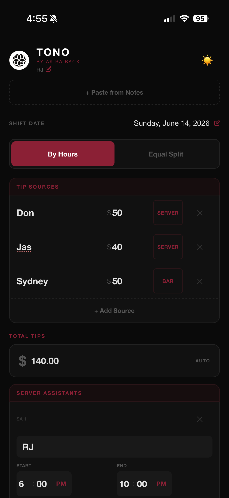
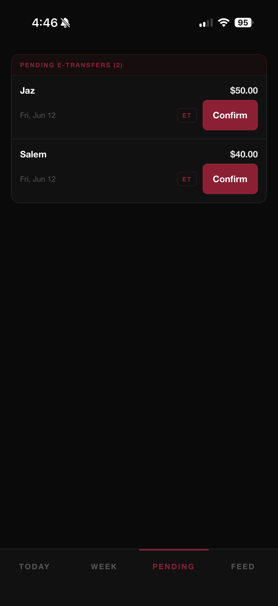
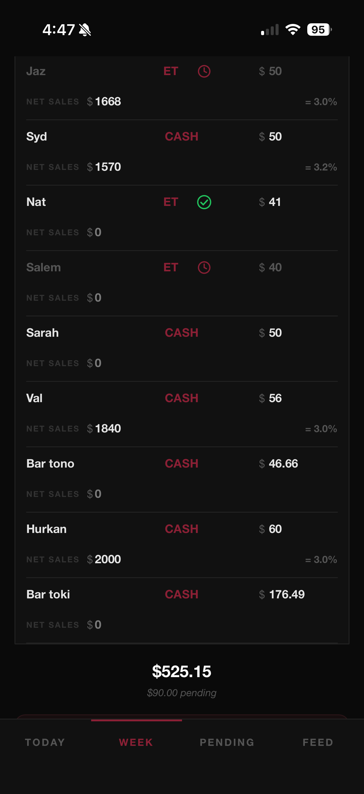

Overview
At TONO, I designed and built TonoTip, an internal system that digitized tip distribution for server assistants and bartenders.
Problem
- Manual calculations across multiple tools
- No shared visibility between team members
- High risk of errors and disputes during closing
Solution
Built a two-module system:
- SA Tip Calculator — hours-based distribution for server assistants
- Bar App — real-time transaction tracking for bartenders
Introduced shared visibility and real-time synchronization across all front-of-house staff.
Screens

SA Calculator

Bar Feed

Input Flow
Before vs After
Before
- Notes app + calculator + logbook
- Manual verification each shift
- No transparency in calculations
- Errors led to disputes
After
- Single shared system
- Real-time data visibility
- Faster and transparent workflow
- Reduced errors and disputes
Impact
100%
Team adoption
Nightly
Usage frequency
0
Calculation errors
∞
Transparency
"Servers began lining up to enter their own tip-outs directly into the app, turning it into a transparent and participatory workflow."
Highlights
- Replaced manual tip distribution workflows across server assistants and bartenders
- Designed a multi-user, real-time system with shared transaction visibility
- Eliminated calculation errors and reduced end-of-night friction
- Adopted by the entire front-of-house team and used daily
- Improved transparency through shared participation